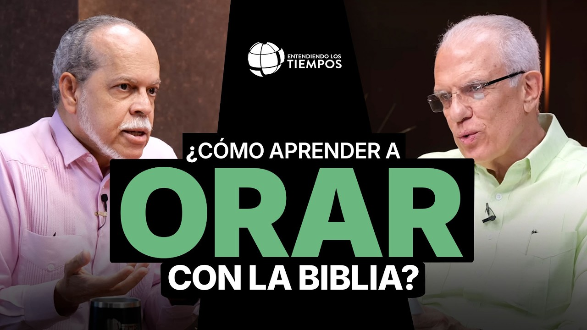
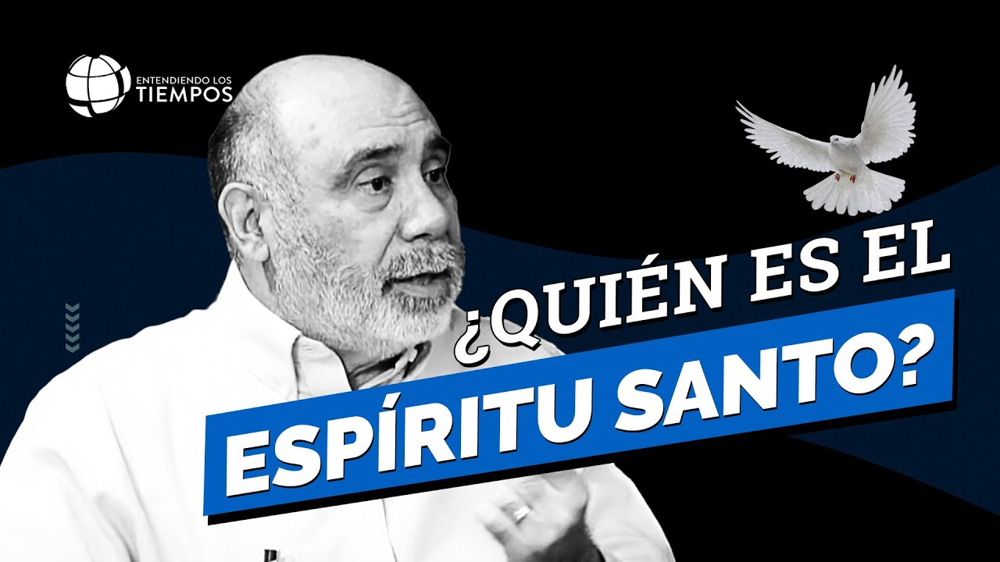
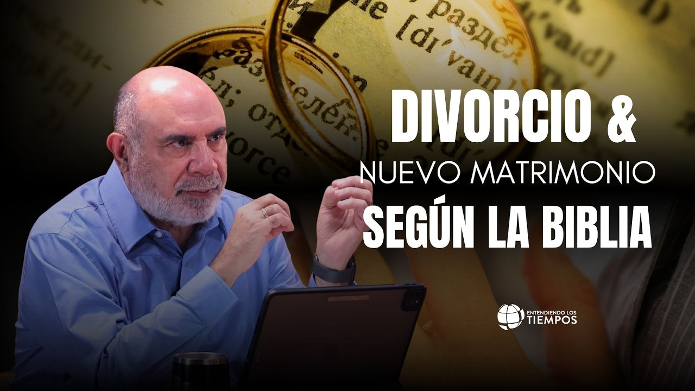
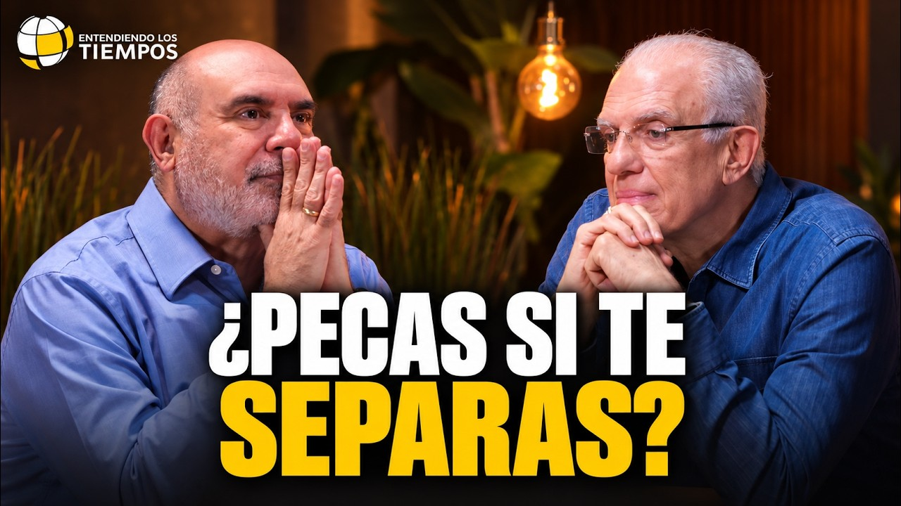
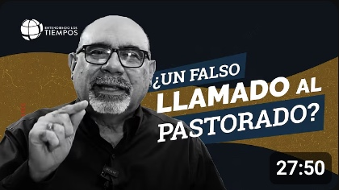
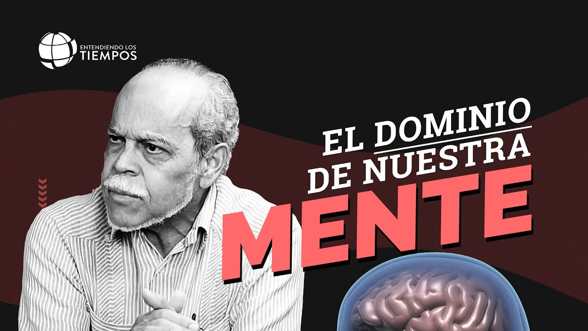
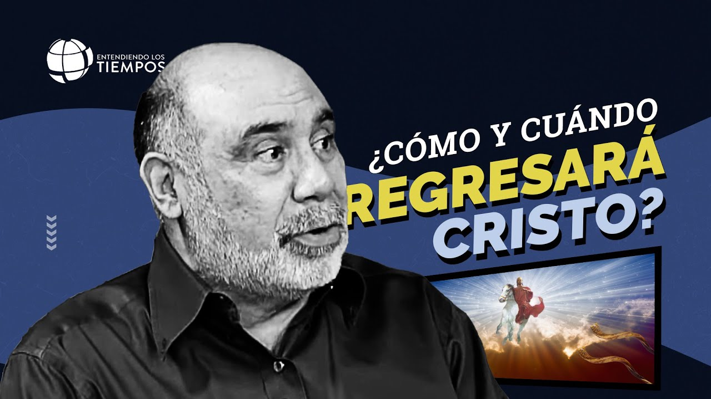

¿Buscas a Dios o solo sus respuestas? | Miguel Núñez.
Antes: CLAMA A MÍ: RECUPERANDO la perla perdida de la ORACIÓN | Entendiendo Los Tiempos | T6-78
- 6.277.258 impresiones
- CTR 4,11%
- Retención 45,5%
- 509.902 vistas
Aquí encuentras, semana a semana, lo que se ha trabajado en el canal, los datos que respaldan cada decisión y lo que esperamos lograr.
Así se veía cada episodio antes y cómo se ve hoy en YouTube. Los datos son el punto de partida de cada uno.

Antes: CLAMA A MÍ: RECUPERANDO la perla perdida de la ORACIÓN | Entendiendo Los Tiempos | T6-78

Antes: EL ESPÍRITU SANTO: la persona menos conocida de la TRINIDAD | Entendiendo Los Tiempos | T5 Cap #22


Antes: ¿Qué dice la Biblia sobre el divorcio? Causas legítimas y esperanza para el matrimonio | T6- 88

Antes: ¿Cómo luce un PASTOR con un LLAMADO AUTÉNTICO? | Entendiendo Los Tiempos | T4 Cap #73

Antes: La gran BATALLA por la VERDAD | Entendiendo Los Tiempos | T5 Cap #31

Antes: Cómo será la SEGUNDA VENIDA de Jesucristo | Entendiendo Los Tiempos | T5 Cap #5
Datos oficiales de YouTube Studio: 501 videos, de los cuales 310 son episodios de formato largo (15 minutos o más). Cinco hallazgos y lo que decidimos a partir de ellos:
% promedio de cada episodio que se ve, por año de publicación
% de personas que hace clic al ver la miniatura
| Episodio | Impresiones | Vistas | CTR | Retención |
|---|---|---|---|---|
| ¿Buscas a Dios o solo sus respuestas? | 6.277.258 | 509.902 | 4,11% | 45,5% |
| El grave peligro de ignorar a la Tercera Persona | 6.955.378 | 581.489 | 3,92% | 44,1% |
| Lo que la Biblia establece sobre el fin de una relación y las segundas nupcias | 9.380.885 | 497.333 | 3,13% | 35,6% |
| El grave error de someterte a un hombre sin el verdadero respaldo de Dios | 10.225.711 | 530.428 | 3,41% | 39,1% |
| La BATALLA por la VERDAD | 6.360.355 | 406.073 | 3,99% | 42,9% |
| El PELIGRO espiritual de vivir DISTRAÍDO antes del regreso de Jesucristo | 4.809.207 | 373.307 | 3,48% | 44,2% |
El CTR es el porcentaje de personas que hace clic al ver la miniatura. Estos episodios suman 44,0 M de impresiones y tienen un CTR de 3,62%, por debajo del promedio del canal (4,55%), pero retienen bien a quien los abre. Los cambios ya están publicados; su efecto se medirá en los próximos informes.
Basadas en los temas que mejor retienen a la audiencia del canal.
Respaldado por: 'Qué hacer cuando Dios cierra una puerta' (51.4% retención, 65.2K vistas en días) y '¿Dónde está Jesús en medio del caos?' (51.7% retención, 17:30 min vistos).
Respaldado por: '¿Tu Iglesia Está Muriendo Sin Saberlo?' (15:37 min retención / 46.2%) y '¿Cómo luce un pastor con un llamado auténtico?' (10.22M impresiones, #1 en suscriptores).
Respaldado por: '¿Qué dice la Biblia sobre el divorcio?' (9.38M impresiones, #1 en ingresos del canal) y 'Suegros y matrimonio' (47.4% retención).
Respaldado por: '¿Cómo vivir bajo la teología de la cruz?' (54.55% retención, récord histórico del canal) y Short '¿Estás cansado todo el tiempo?' (92.7K vistas).
Respaldado por: '¿Estamos viviendo los días de Noé?' (51.2% retención) y 'Cómo será la Segunda Venida de Jesucristo' (4.8M impresiones, 44.2% retención).
Respaldado por: 'Crianza bíblica vs. crianza moderna' y alta retención en temas de familia por parte de la audiencia de 35 a 64 años.
Respaldado por: '¿Adoración bíblica o producción emocional?' (47.5% retención, 183K vistas) y 'Predicación expositiva' (47.85% retención).
Respaldado por: 'Tecnología, humanidad y deshumanización: ¿quién te está discipulando?' (3.42M impresiones, 261K vistas).
Punto de partida de los 6 episodios renovados: CTR de 3,62% sobre 44,0 M de impresiones históricas. Tres escenarios según el CTR que alcancen:
Las proyecciones multiplican el aumento de CTR por el volumen histórico de impresiones y estiman suscriptores con la tasa del catálogo (0,78% de las vistas). Son estimaciones, no garantías: el resultado real depende de las impresiones que entregue YouTube y se medirá en los próximos informes.
Escríbelas aquí y le llegan directamente a Diana.